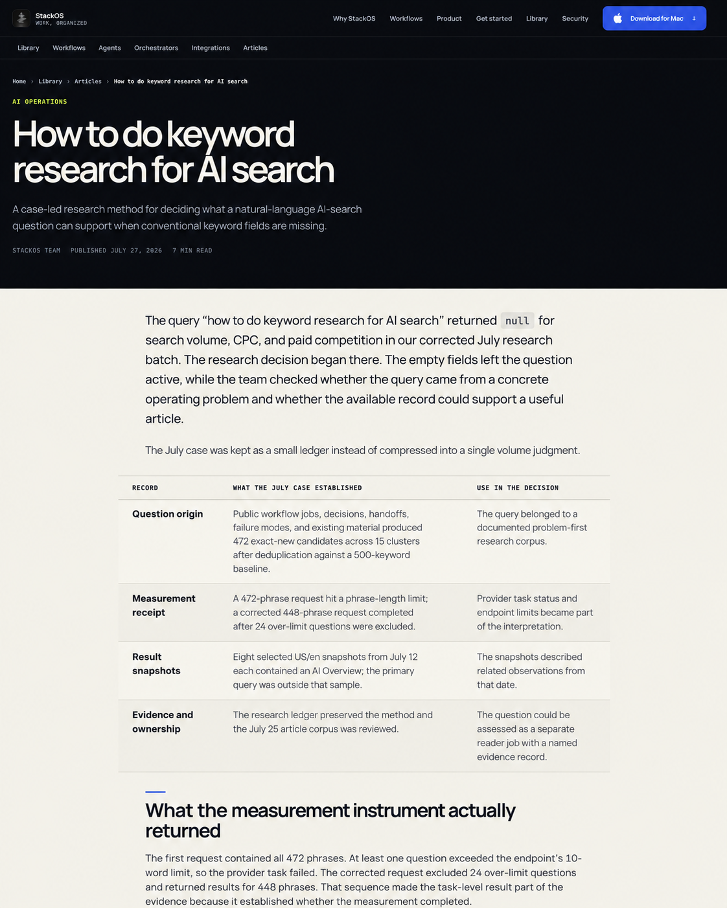
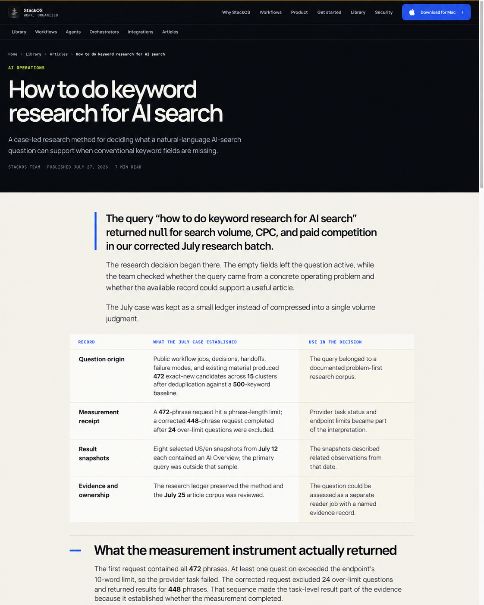

October 5, 2026 · Current scope · StackOS browser and built-in ImageGen
Content design inside the existing StackOS page
Improve how the content reads and scans while retaining the current header, navigation, hero, palette and type. The three current concepts show the same article within its existing page, with changes confined to the warm-paper content area.
The main opportunities are paragraph rhythm, useful emphasis, readable tables and lighter grouping of lists. The earlier whole-page concepts are superseded. No production files were changed.
Current page screenshot · Exact prompt set · Structured scope and findings
Current concepts
Options follow the order of the latest three images displayed in chat.
Option 1
Open original
Option 2
Open original
Option 3
Open original
Apply the selected treatment across content templates
| Content | Change |
|---|
| Article prose | Improve paragraph spacing, comfortable reading measure and heading scale; reserve callout emphasis for the specific point. |
| Article evidence tables | Improve column widths, cell padding, row separators and top alignment; consider grouped evidence rows for long text. |
| Workflow operator and agent content | Keep the existing sequence and comparison, with clearer numbered steps and lighter grouping. |
| Workflow prerequisites and proof | Improve list indentation and distinguish illustrative examples from verification details without rewriting claims. |
| Integration facts and actions | Use consistent label/value alignment and compact existing action rows with read/write labels. |
| Agent and orchestrator contract content | Use clearer hierarchy and lighter lists for responsibilities, boundaries, handoff inputs and outputs. |
Preserve during implementation
Keep the approved wording and factual limits, current URLs and metadata, useful links and server-rendered content. The article remains owned by Markdown; workflow and role content remains owned by existing contracts. These images guide presentation; generated text differences are not proposed copy edits.
Implementation follows selection through the existing engineering workflow, including responsive tables/lists, keyboard access, measured contrast and source-content checks. This review does not establish ranking or conversion gains.
Tracker: website-template-design-review-20261005. Current source screenshot captured through StackOS browser at 1440 × 1800. The broader audit includes eight public pages, plus mobile article, workflow and catalog openings.